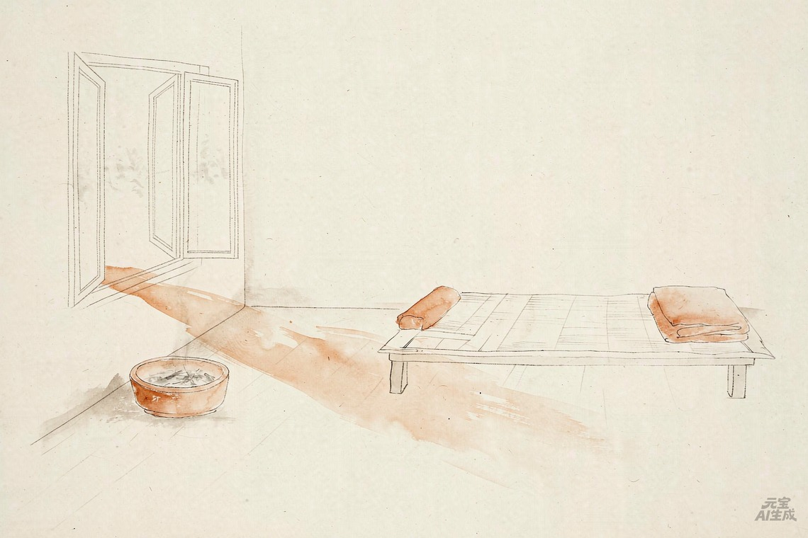
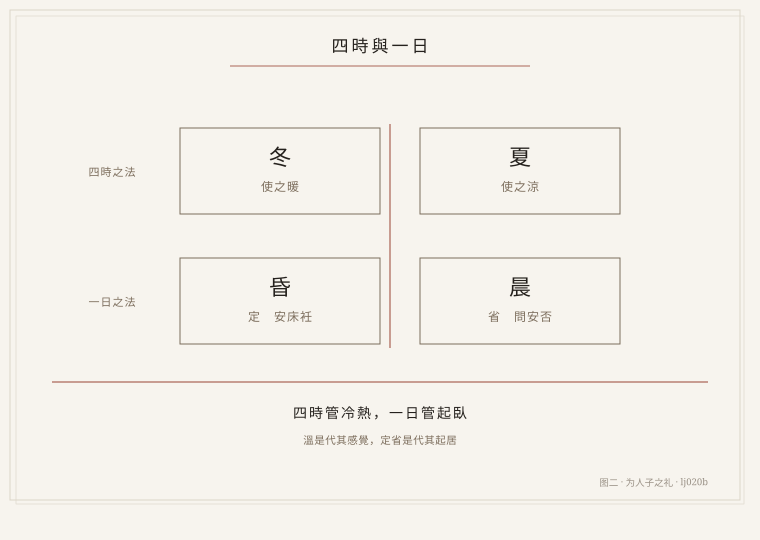

曲礼上 · 一·二十一 · 第 20 课
这一节只有一句话，八个字，却把「为人子」写成两套功课：一套按四时，一套按一日。
说什么事：为人子者，冬则温之，夏则凊之；昏则定之，晨则省之。
落在哪一层：教。上一节讲怎么求长者，这一节讲怎么事父母——求教向外，事亲向内，都是「就」。
为何编在此位：一·十九讲年至百岁的养道，一·二十讲谋于长者的身与口；此节把「养」落到最具体的两件事上：冷热与起卧。
【经】凡為人子之禮，冬溫而夏凊，昏定而晨省。
凡 统贵贱而言。疏标此节为「明人子事亲奉养之礼」。
冬温 冬寒，则为亲温之。温者，使之暖，非问其寒。
夏凊 凊，凉也。陆德明《音义》：「凊，七性反；字从冫，冰，冷也；本或作水旁，非也。」——从冰不从水，是「使之凉」，不是「水之清」。
昏定 昏，日入后。郑注：「安定其床衽也。」定者，落在那张床上，不落在嘴上。
晨省 晨，旦也。郑注：「省问其安否何如。」
凡为人子的礼：冬天为父母暖其居处，夏天为父母凉其居处；天黑了替他们安顿床席，天亮了问他们安否。
孝之始不在礼物，在体感与时刻。四时管冷热，一日管起卧；两套相合，才盖住一整天。
第一层 「凡」字的分量 劈头一个「凡」，把这份功课摊给所有为人子者，不问贵贱。礼书讲孝，常被人读成士大夫的教养；此字先把这个读法堵住。
第二层 「温」「凊」是替他感觉，不是问他感觉 冬日问一句「冷不冷」，是省；冬日把居处弄暖，是温。经文用的是后者。疏说这是「四时之法」——按季候调，不按问答调。这一层最见分寸：孝不是探询，是代劳；不是收集信息，是改变处境。
第三层 「定」落在床衽上 郑注只六字：「安定其床衽也。」不是「问其寝否」，是把床席齐整了，使亲体安定之后才退。疏说得更细：「应卧，当齐整床衽，使亲体安定之后，退。」——退，也是礼的一部分：安顿好了就走，不守着。
第四层 「省」是隔夜之后的第一眼 晨省之省，郑注「省问其安否何如」。疏点出一层极易漏掉的意思：「先昏后晨，兼示经宿之礼。」——一夜过去，人才知道昨夜的安顿有没有效。故省不是寒暄，是复查。
第五层 同宫异宫，礼有变 熊氏引《内则》：「同宫则鸡初鸣，异宫则昧爽而朝。」住在一处，鸡叫就起身；分宅而居，天将明才去。同一份功课，因距离而改时刻。此条最实用：礼不要求你按一个钟点做，要求你按你与实际处境做。
第六层 两套并置 四时之法管寒暑，一日之法管起卧。只有四时，则一日之内无人照看；只有一日，则换季之时无人调停。两套相交，才成一整年、一整天。
与今日何干 今日孝多以致敬、转账、节日、礼物表达。此节说的是两件最便宜也最贵的事：替他感觉冷热，按他的作息到场。前者要心细，后者要时间。礼物可以代买，这两样不能代。
| 左 | 右 |
|---|---|
| 四时：冬温 | 四时：夏凊 |
| 一日：昏定（安床衽） | 一日：晨省（问安否） |
| 温者使之暖，非问其寒 | 定者落在床衽，不落在嘴上 |
| 先昏后晨，示经宿之礼 | 同宫鸡鸣，异宫昧爽 |

